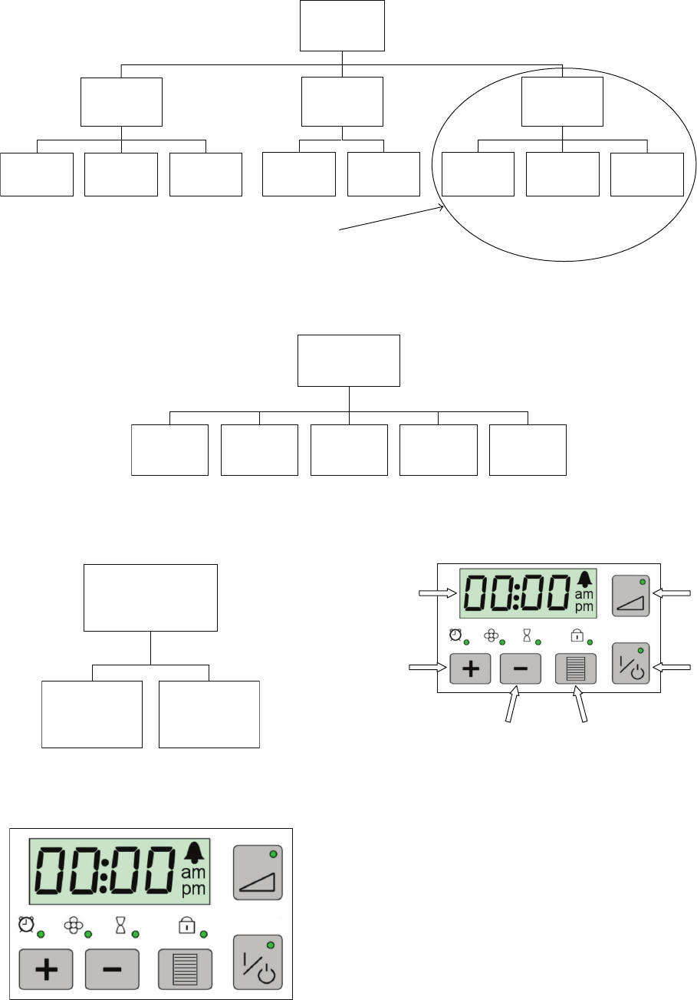
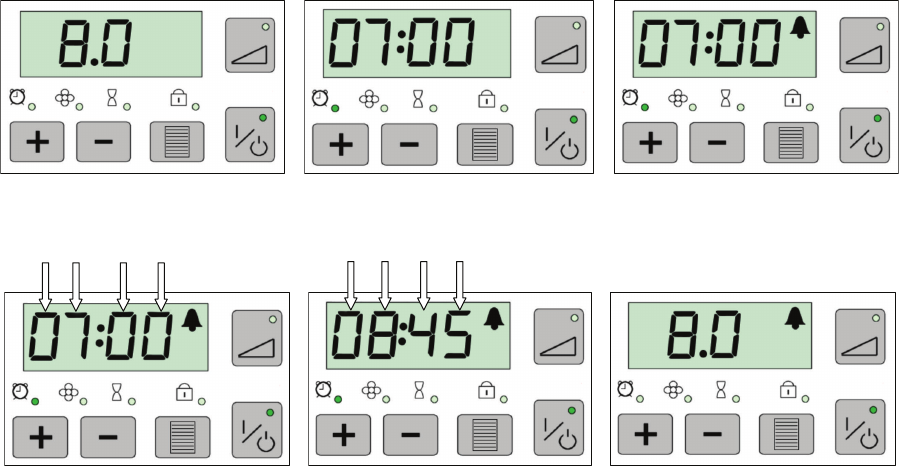
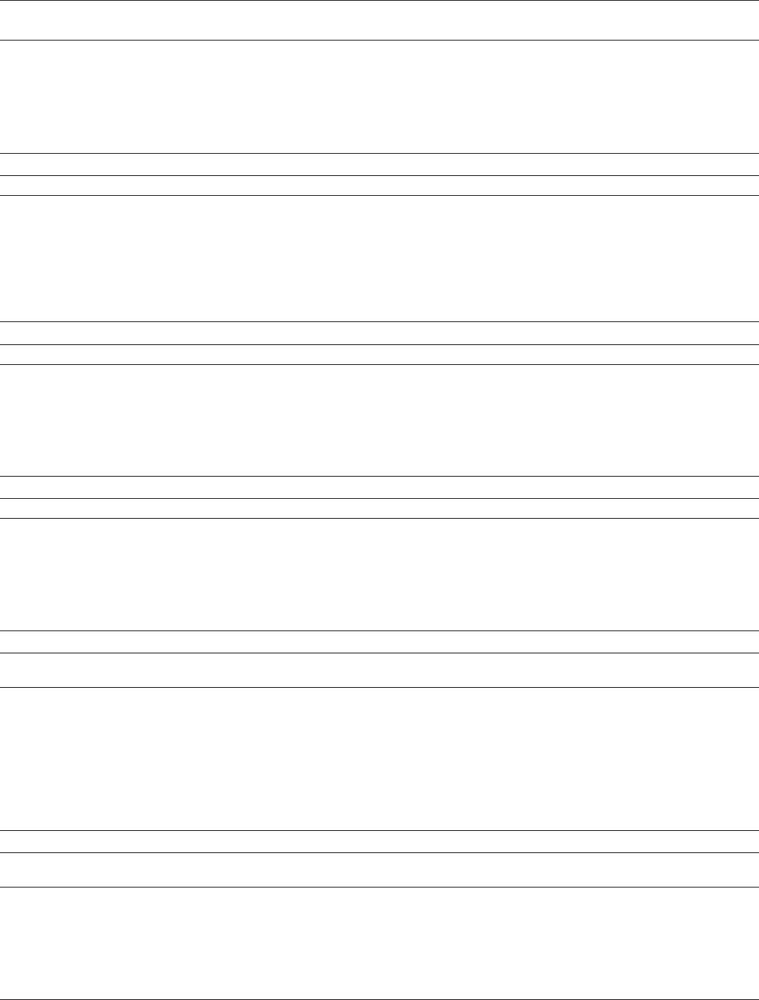
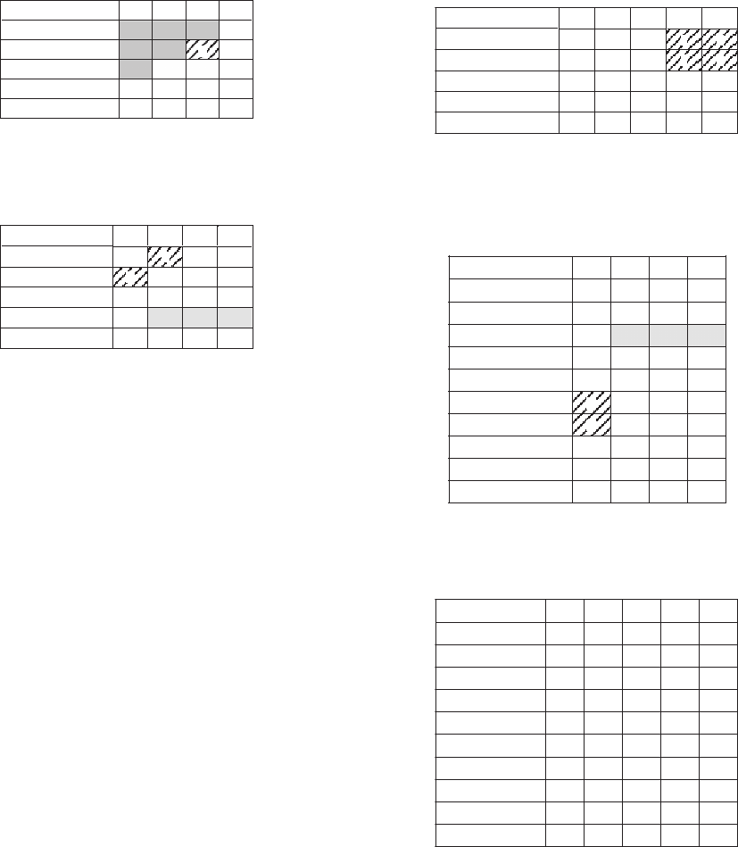
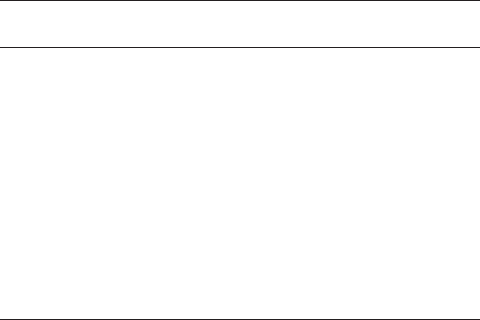

Hindawi Publishing Corporation
Advances in Human-Computer Interaction
Volume , Article ID , pages
http://dx.doi.org/.//
Research Article
Enhanced Cognitive Walkthrough:
Development of the Cognitive Walkthrough Method to Better
Predict, Identify, and Present Usability Problems
Lars-Ola Bligård and Anna-Lisa Osvalder
Division of Design and Human Factors, Department of Product and Production Development, Chalmers University of Technology,
412 96 Gothenburg, Sweden
Correspondence should be addressed to Lars-Ola Blig
˚
ard; lars-ola.bligard@chalmers.se
Received October ; Accepted August
Academic Editor: Kerstin S. Eklundh
Copyright © L.-O. Blig
˚
ard and A.-L. Osvalder. is is an open access article distributed under the Creative Commons
Attribution License, which permits unrestricted use, distribution, and reproduction in any medium, provided the original work is
properly cited.
To avoid use errors when handling medical equipment, it is important to develop products with a high degree of usability. is
can be achieved by performing usability evaluations in the product development process to detect and mitigate potential usability
problems. A commonly used method is cognitive walkthrough (CW), but this method shows three weaknesses: poor high-level
perspective, insucient categorisation of detected usability problems, and diculties in overviewing the analytical results. is
paper presents a further development of CW with the aim of overcoming its weaknesses. e new method is called enhanced
cognitive walkthrough (ECW). ECW is a proactive analytical method for analysis of potential usability problems. e ECW method
has been employed to evaluate user interface designs of medical equipment such as home-care ventilators, infusion pumps, dialysis
machines, and insulin pumps. e method has proved capable of identifying several potential use problems in designs.
1. Introduction
In the development of user interfaces, it is important to con-
sider the need for these to be simple and safe to handle for
the user group in the intended context. is is especially
true of safety-critical technical equipment such as medical
equipment, where a possibility of harm to patients can arise
from erroneous use of the devices [–]. Several studies have
shown that there is a clear connection between problems
of usability and human error; for example, Obradovich and
Woods [], Lin et al. [], and the FDA [] have also referred
to this problem. Liljegren [] has shown in a doctoral thesis
that medical personnel rank “diculty of making mistakes”
as the most important aspect of good usability for medical
equipment.
An important step in the development of usable technol-
ogy is to try in advance to identify and evaluate the occasions,
in the interaction between user and product, when there is a
possibility of errors arising []. To identify the problems that
cangiverisetoerrorsinhandlingaproduct,evaluationsare
normally made of the product’s user interface with realistic
tasks, that is, in a usability evaluation. Jaspers []presents
anoverviewofmethodsusedinmedicaltechnologyusability
evaluations.
eusabilityevaluationofuserinterfacescanproceed
according to two dierent approaches: empirical and ana-
lytical [, ]. Empirical evaluation involves studies of users
who interact with the user interface by carrying out dierent
tasks,whichisdoneinwhatareknownasusabilitytests[].
Usability tests have been employed to study the usability of
medical equipment, such as infusion pumps [] and clinical
information systems [].
In an analytical evaluation, no users are present as test
subjects, and the evaluation of the interface is made by one
or more analysts using theoretical models, such as heuristic
evaluation [, ]. Heuristic evaluation of medical equipment
has been done, for instance, with infusion pumps by [].
An oen used analytical method of usability evaluation
is cognitive walkthrough (CW) [–]. CW is an inspec-
tion method for evaluating usability in a user interface.
Advances in Human-Computer Interaction
e method focuses on simplicity in learning, especially
through exploratory learning. CW has been employed to
evaluate medical equipment, such as clinical information
systems, patient information systems, clinical order systems,
dialysis machines, and patient surveillance systems [, ,
–]. An advantage in using CW in healthcare is that
the method can be used to identify important usability
problems quite easily, quickly, and cheaply when resources
for performing real usability tests are limited. Usability tests
demand highly skilled usability professionals, end users to
testwhosetimeisoenhardtobook,andplentyoftimeand
eorttoperformathighcost[]. Since CW is also a task-
basedmethodandtheevaluationfollowsalinearpath[], it
is capable of detecting a greater number of usability problems
than in usability tests, where the number of evaluated tasks is
lower for time and cost reasons.
However, a limitation of CW is that it focuses mainly on
ease of learning; that is, it assesses whether the equipment
is simple to use without any previous knowledge. erefore,
the CW results usually need to be complemented by other
methods such as heuristic evaluation or usability tests [].
e users’ domain knowledge about the task to be solved is,
however,takenintoaccountwhenevaluatingwithCW.
A number of other weaknesses have been found in CW.
One of the more prominent weaknesses is the emphasis on
low-level details [, , ]. is means that the method
detects problems at a detailed level such as the marking
of buttons but misses problems of a more general and
conceptual nature, for instance, the choice of menu structure
and sequences in the user interface. us, CW entails a
decient high-level perspective in the evaluation.
e purpose of this paper is to describe and discuss a
rened version of the CW method, designated enhanced
cognitive walkthrough (ECW). ECW is a method useful in
the practical engineering work area and is part of human
factors engineering [] and product development []in
the industry. ECW provides a more extensive presentation
of analysis and results than CW does. ECW was developed
especially for the evaluation of medical equipment, but its use
is not limited to this application area. As an example, a case
study of a ctitious medical equipment interface (a home-
care ventilator) will be used in this description.
2. Original Methods
2.1. Hierarchical Task Analysis. In order to make an analytical
evaluation of a user interface with CW, knowledge is needed
about the task that is to be performed with the aid of the
interface. One method employed for analysing work tasks is
hierarchical task analysis (HTA) []. is method breaks
a task down into elements or subgoals []. ese become
ever more detailed as the hierarchy is divided into ever
smaller sub-tasks (progressive re-description). e division
continues until a stop-criterion is fullled, oen when the
subtask consists of only a single operation.
HTA describes, then, how the overall goal of the work-
task can be attained through subgoals and plans. e results
are usually presented in a hierarchical tree diagram. HTA is
also used as a basis for other analytical methods in interface
design, such as the systematic human error reduction and
prediction approach [] and task analysis for error identi-
cation [].
2.2. History and Description of Cognitive Walkthrough (CW).
Cognitive walkthrough is a method for theory-based eval-
uation of usability in interfaces, developed by Lewis and
Wharton []. It is employed to identify problems and gen-
erate proposals about their causes. e method is primarily
intended for application during the process of designing
user interfaces. Unlike many other evaluation methods for
usability, such as heuristic evaluation, the focus in CW is on
the user’s cognitive processes and previous knowledge.
CW concentrates on ease of learning by exploration and
is based on theories about explorative learning presented by
Lewis et al. []. Explorative learning means here that a user
tries to perform a task by a “trial and error” technique. e
method simulates the user’s cognitive processes when he/she
carries out a sequence of actions in performing a given task.
CW determines whether the user’s background knowledge,
together with hints from the interface, will lead to a correct
sequence of goals and actions.
e analysis is best conducted by an evaluator or a
group of evaluators, who may consist of designers, soware
developers, marketing personnel, future users, and persons
with expertise in ergonomics and human factors engineering.
Since the method simulates a user’s thoughts and behaviour,
it requires that the person(s) performing the analysis has or
havesucientknowledgeabouttheusers.equalityofthe
results from the analysis depends on how well the evaluators
can place themselves in the situation as users.
CW was originally developed in order to bring cognitive
theory closer to practical design development and evaluation
of user interfaces []. e original formulation of CW was
intended to evaluate noncomplex interfaces (walk-up-and-
use interfaces), meaning that the user is not expected to
have any previous knowledge of the technical system in
the situation of use. Examples of such interfaces are cash
dispensers and coee machines. CW is also employed to
evaluate user interfaces of a more complex character, such as
graphic interfaces for Unix operating systems or sales support
systems, and research CAD tools, as described by Wharton
et al. []. Moreover, CW is considered to be usable by so-
ware developers without specialised knowledge in cognitive
theory and human-computer interaction [].
e rst version of the CW method was presented by
Lewis et al. []. It has since been rened into a second version
by Polson et al. []. Today a third version exists, described
by Wharton et al. [] and Lewis and Wharton []. Initially
the method was developed in order to discover, improve,
and counteract defects and problems in user interfaces. e
second version of CW was created to make the procedure
more formal and detailed, since the initial method presup-
posed that the evaluators had knowledge of cognitive theory.
In addition, the questions in the method were too general.
However, the second version became too complex, dicult
to apply, and time demanding. is led to the third version of
CW by Lewis and Wharton [], which is simpler and more
Advances in Human-Computer Interaction
eective than its predecessors. e method was consequently
also more accessible for usability practitioners.
e third version of CW comprises three steps: prepara-
tion, analysis, and followup. e preparatory step deals with
identifying and dening the users, choosing tasks to evaluate,
determining the correct sequence of actions for these tasks
(e.g., with the aid of HTA), and nding out how the user
interface presents information during these sequences. In the
second stage, the analysis, a walkthrough is conducted of the
chosen tasks, where the evaluators pose four questions for
each stage in the sequence of action. e questions are aids
to simulating the user’s cognitive process.
() Will the user be trying to achieve the right eect?
() Will the user discover that the correct action is
available?
() Will the user associate the correct action with the
desired eect?
() Ifthecorrectactionisperformed,willtheuserseethat
progress is being made?
e questions are answered with YES or NO and reasons
why the user will succeed or fail in performing the action
(“failure/success stories”). Problems that arise are noted,
along with the reason why the problems arose, based on
assumptions made by the evaluators. In the last step, followup,
proposals are given for how the user interface can be changed
so as to eliminate the discovered problems.
2.3. Weaknesses of Cognitive Walkthrough. Even though CW
has been rened in a couple of steps, there are still some
weaknesses in the method. ree weaknesses have been
identied and are thoroughly described in a Master’s thesis
from Chalmers University of Technology [].
e rst of these is connected with the CW method’s lack
of high-level perspective. is was pointed out by Blig
˚
ard
and Wass [] in a heuristic evaluation of a number of user
interfaces. Several usability problems were then identied
that the analysis with CW itself missed. Wharton et al. []
also drew attention to this weakness. CW does not answer
the question of whether the user knew that an entire function
was available or whether the interface provided hints that it
was. us, CW focuses on the sequence of operations that are
needed to carry out a task but does not evaluate the function
itself. If the user does not know that a function (a sequence
of operations) is available or if the user interface provides
no hints that it exists, the user will not be able to carry
out the correct sequence of operations, even if the sequence
is simple and intuitive. Although the low-level analysis is
usually followed by a more high-level perspective when the
analyst searches the result for pattern and strategies in the
interaction, the CW methods do not help the analyst to
achieve the higher levels of perspective.
e next weakness of CW is that the failure-and-success
stories provide insucient information about the dierence
in the seriousness of problems between dierent operations.
e answers can only be classied as either success or failure,
which are regarded as insucient reply options. It is dicult
to classify the answer as either % success or % failure.
Further, there is a distinction between whether the detected
problem concerns an important intended or safety-critical
function or whether it involves only a less important oper-
ation. Neither is any categorisation made of types of detected
usability problems.
e third weakness of CW has to do with the presentation
of the results of the evaluation. When the question process
in CW is completed, it is hard to obtain a clear and general
overview of the results from the analysis. is is true both
for a particular user interface and when comparing dierent
interfaces.Forexample,itishardtoreadwhicharethe
greatest problems in the design of the interface, which part
of the interface the problems are in, or whether interface A
has fewer problems than interface B.
To sum up, the weaknesses of CW are as follows.
(i) CW has a decient high-level perspective in the eval-
uation of user interfaces, which was thus manifested.
CW does not answer the question whether the
user knew that the function concerned was
available.
CW does not answer the question whether the
interface provided hints that enabled the user
to discover more easily that the function was
available.
(ii) e explanations for success or failure yield insuf-
cient information about the dierence in problem
severity between distinct operations.
(iii) It is dicult to obtain an overview of the results, both
within a user interface and in comparison between
dierent interfaces.
3. Enhanced Cognitive Walkthrough
e aim in developing ECW was to try to counteract the
deciencies in the third version of CW. e goal was to
develop a method that can better detect and identify given
presumptive usability problems in an interface and also
provide an overview of which types of problems exist and how
serious these are.
To attain the goal, three additions to CW were made:
() a division into two levels of questions, in order to inves-
tigate functions and not only operations; () grading of tasks,
grading of answers for success and failure, respectively, and
categorisation of these answers in types of problems; ()
presentation of the results in matrices for a better overview
and a possibility of comparison between dierent interfaces.
3.1. Description of ECW. Enhanced cognitive walkthrough
(ECW) is a method of inspection based on the third version
of CW, presented by Lewis and Wharton []. ECW uses
a detailed procedure to simulate the user’s problem-solving
process in each step of the interaction between user and
interface. It is continually checked whether the user’s goal
andknowledgecanleadtothenextactionbeingcorrectly
executed.
Advances in Human-Computer Interaction
e method is conducted by an evaluator or a group
of evaluators, who may consist of designers, soware devel-
opers, marketing personnel, presumptive users, and persons
with knowledge of ergonomics and human factors engineer-
ing. Most important is that real users and/or knowledge about
use and the users must be present among those who carry out
the analysis.
ECW comprises three parts: preparation, analysis, and
presentation of the results in matrices. Before the evaluation
begins, however, the artefact (product or technical system
tobeanalysed)andtheintendeduseandtheusermustbe
identied and described.
To exemplify the working procedure in the dierent steps
of ECW, a case study is employed, on a ctitious home-care
ventilator of the CPAP (continuous positive airway pressure)
type. e method is presented in steps, and a general
description is rst given of how the evaluation is performed
for each step, followed by examples from the case study in
order to illustrate how the method works more specically.
e case is written as it would be an existing machine when
refereeingto,forexample,userandmanual.ectitious
CPAP is based on the existing home-care ventilator BREAS
PV [] which have been moderated to t as a case here.
Finallytherearereectionsonmethoddevelopment.
3.2. Intended Use and Users
3.2.1. Method Description. Before the ECW analysis is begun,
it is determined which artefact is to be evaluated and what its
intendeduseis.isappliestoboththeartefact’smaintask
and other tasks that it can perform. Moreover, the intended
users must be dened.
3.2.2. Case Study of a Home-Care Ventilator
(1) Analysed Artefact. A home-care ventilator of the CPAP
type is used to counteract sleep apnoea. is condition means
that a person periodically stops breathing while sleeping,
oen because the airways collapse. When the body discovers
this, the patient’s degree of consciousness is raised so that
breathing resumes but not so much that the patient wakes
up. As a result, the patient sleeps uneasily at night and does
not rest enough. e CPAP is basically an apparatus with
a fan that creates overpressure. e patient is connected to
theventilatorwithamaskandatube.eoverpressure
helps to open the patient’s airways and thus counteract the
apnoea.
(2) Intended Use.WhenapatientistobetreatedwithaCPAP
at home, a tryout is rst conducted at a hospital. ere, the
CPAP is adjusted so that it delivers the right pressure and
counteracts the apnoea. en the patient is sent home with
the ventilator. e case study deals with the use of the home-
care ventilator which takes place during the tryout.
(3) Intended Users. e sta at the hospital who handle the
home-care ventilator during the tryout are specially trained
nurses and physiotherapists. eir main task at the hospital
is to diagnose and treat sleep-related ailments.
3.2.3. Reection. In summary, it can be said that the choices
ofartefact,use,anduserthataremadebeforetheECW
analysis begins are decisive for the quality of the coming
analysis. If the choice of intended use or user is inadequately
or wrongly made in relation to the actual conditions, the
entire evaluation of usability in the artefact will be erroneous.
ECW as a method is highly dependent on the input data that
theanalysisismadeupon.
3.3. Preparation. e phase of preparation for ECW con-
sists of four steps: () selection and grading of tasks for
evaluation, () specication of these tasks, () specication
of the artefact’s user interface, and () specication of the
user and use situation. ese steps are described below in
a sequence, but they should be taken in parallel and jointly
during the preparatory phase. It is thus not necessary for
the specication of tasks to be fully completed before the
specication of the artefact’s user interface is begun.
3.3.1. Selection and Grading of Tasks for Evaluation
(1) Method Description. Depending on the aim and goal of
the study, the rst step is to dene which tasks should be
evaluated. It is important to choose realistic tasks for the
evaluation,includingtasksthatarecarriedoutoenaswellas
tasks that are safety critical and carried out more rarely. e
selection of tasks is a very important part of the ECW method
and merits careful attention, since it is not oen feasible to
evaluate all tasks that can be performed with a device. It
is impossible to give strict general criteria to which tasks
to select, since it strongly depends on the specic human-
machinesystem,butitisoengoodtoevaluatetasksthatare
critical for the intended use, tasks that are frequent in use, and
tasks that are hazardous for the user or the environment.
e selection of tasks must be based on the intended
use not on the design or function of the equipment. Each
selected task should be given a unique number, known as
the task number. Each task is graded from to , the “task
importance.” e grading is based on how important the task
isintheintendeduseoftheartefact.emostimportant
tasks are graded and the least important . It is important
that the tasks which are selected for comparison should
havethesametaskimportanceforalluserinterfacesifa
comparison between dierent user interfaces of an artefact
is to be performed.
(2) Case Study of a Home-Care Ventilator. With reference to
the intended use and the manual, ten ordinary tasks were
noted that can be performed on the home-care ventilator. e
tasks were then graded according to how important they are
for being able to use the ventilator (Table ). e selection and
grading were made in collaboration with two users.
(3) Reection.Tosumup,thetasksthatarechosenforanalysis
have a great impact on the quality of the results. If the wrong
tasks are selected, usability will not be evaluated against the
correct situation of use. e selection and grading of tasks
should be done in cooperation with the intended users or
with persons who have knowledge about the users and use. A
Advances in Human-Computer Interaction
T : Grading of the tasks performed by the home-care ventilator.
Task Grade
Start treatment
Set actual time
Setwake-upalarm
Set pressure
Adjustment of what to show in the display
Showsowareversion
Show operating hours
Lock/unlock the panel
Use the ramp function
Turn o treatment
correct and exhaustive description of the user is also essential
for methods such as CW and ECW, as has been stressed by
Liu [].
3.3.2. Specication of the Tasks
(1) Method Description. e next step in the preparations is to
determine the intended, correct way in which the task should
be performed with the aid of the user interface. Since ECW
involves a hierarchic approach in analysis, it is appropriate to
describe the task in a tree diagram by employing hierarchical
task analysis (HTA) []. e bottom level in HTA consists of
the individual steps (actions) in the interaction between user
and interface, which are termed operations. e tasks and
subtasks above this level are called nodes. A node together
with the nodes and operations below is known as a function
(Figure ).
e nodes and operations in the HTA must be numbered
uniquely, in order to facilitate the compilation of results
from the analysis. For example, a function can be designated
according to the uppermost node. When making compar-
isons between dierent interfaces, the design of the HTA will
be dierent for each interface. is is not a problem for the
cominganalysis,aslongasthesubdivisionandgradingof
tasks are the same for all the interfaces. But if they are not
the same, it is impossible to make a relevant comparison.
(2) Case Study of the Home-Care Ventilator.eselectedtasks
were described by an HTA to obtain the structure before the
ECW analysis. e description was made on the basis of how
theventilatormustbehandledaccordingtothemanual.us,
the evaluation is made in terms of the handling technique
that the manufacturer has envisaged. Figures and show
the HTA diagram for task (set wake-up alarm) and task
(set pressure).
In the subsequent analysis, task will be employed as an
example. is task is not central to the intended use but is
chosen as a good instance of how the method works. Task
is divided into ve operations. e node and the operations
describe the dierent goals that the user has in handling.
Together, the node and operations constitute a function that
willbeevaluatedintheanalysis.
(3) Reection. What is lacking in the classic CW method,
then, is an analysis of the user interface on a higher level that
lies above the direct operations performed by the user, that is,
an analysis which is oriented more towards tasks or sequences
of operations (functions). To make an analysis with several
levels, an HTA diagram is therefore needed as a basis. HTA
diagrams have also been used in connection with traditional
CW analysis [], but then only for analysing the operations
(actions) at the bottom task level of the HTA. ECW also
analyses the upper task levels in the HTA diagram.
When describing the task with HTA it is worth noting
that a task can be performed in several dierent ways to
reach the same goal. Moreover, the grouping of operations
and functions may also vary for the same task. It is therefore
important that the design of the HTA diagram corresponds
as closely as possible to the sequences of action that occur
in reality. is is especially important if dierent products or
technical systems shall be compared aer the analysis. In the
ctive case here no plans are used in the HTA to make them
simpler to understand.
3.3.3. Specication of the User Interface
(1) Method Description. e HTA diagrams describe the cor-
rectwayinwhichthetasksaretobeperformed.Aspecica-
tion is then made of how the interface looks for the dierent
operations. In this way it is possible to evaluate the user
interface against each task.
(2) Case Study of the Home-Care Ventilator.euserinterface
on the home-care ventilator (Figures and )consistsofa
display, ve buttons, and six LEDs (light-emitting diodes),
two of which are located in buttons. e display has four
seven-segment signs, marking for am/pm, and a symbol
showing that the alarm clock is activated.
Foreachtaskthatistobeevaluated,boththeuser’sactions
(Figure ) and the interface’s response for the respective
handling in a sequence are specied. Figure presents the
sequence for how task , “set wake-up alarm”, is performed.
e sequence begins with presentation of the interface’s
appearance before the rst action.
(3) Reection. e specication of the user interface must be
done at the level of detail that is required for the coming
analysis. Which level of detail is needed cannot be stated in
general; it is up to the evaluator to decide. But each operation
has to be described in such a way that its usability can be
evaluated. Both the user’s actions and the artefact’s responses
to these must be specied in equal detail.
3.3.4. Specication of the User and Use
(1) Method Description. e last step in the preparations is to
dene what knowledge and experience of the artefact and its
use are possessed by the expected user. Further, the context in
which the artefact operates is described. e context concerns
the physical, organizational, and psychosocial environment
during use.
(2) Case Study of the Home-Care Ventilator.Inthecaseof
home-care ventilators, interviews were held with the users in

Advances in Human-Computer Interaction
Main task
node
Subtask
node
Bottom level
task
operation
Bottom level
task
operation
Bottom level
task
operation
Subtask
node
Bottom level
task
operation
Bottom level
task
operation
Subtask
node
Bottom level
task
operation
Bottom level
task
operation
Bottom level
task
operation
Function
F : HTA diagram with nodes, operations and functions.
(3.1) Enter
wake-up
alarm mode
(3.2) Activate
wake-up
alarm
(3.3) Shi to
setting of
wake-up time
(3.4) Adjust
wake-up time
(3.5) Exit
setting of
wake-up time
(3) Set wake-up
alarm
F : e correct handling sequence for the task “set wake-up alarm” presented in an HTA diagram.
(4.1) Enter
pressure
setting mode
(4.2) Adjust
pressure
(4) Set pressure
F : e correct handling sequence for the task “set pressure”
presented in an HTA diagram.
F : e user interface of the home-care ventilator.
1 23 4
5
6
Display
Increase
Ramp
On/o
Decrease Function
(1)
Wake up
(2) Pressure
(3) Operational time
(4) Lock
(5) Ramp
(6) On/o
F : e user interface of the home-care ventilator with
explanations.
order to learn their background and knowledge about such
ventilators. Observations were also made in order to study
use. e results can be summarised briey as follows.
e users of home-care ventilators at the hospitals are
nurses and physiotherapists with special training in the area.
At hospitals, use takes place during what are known as
tryouts, in which a patient is connected to a ventilator with
a mask and tube. e patient sleeps during the tryout, and

Advances in Human-Computer Interaction
(a) Task/function .: set wake-up alarms (b) User action to operation .: press the
function button once
(c) User action to operation .: press the
increase button once
Flashing
(d) User action to operation .: press the
function button once
Flashing
(e) User action to operation .: press
increase or decrease buttons until the desired
wake-up time is shown
(f) User action to operation .: press the
function button three times to exit setting of
wake-up time
F : Performed user actions and the response of the user interface for the task “set wake-up alarm”.
the user adjusts the pressure that the ventilator delivers to
the patient, while the oxygenation of the patient’s blood is
monitored. e tryout takes place in a room with lowered
lighting.eaimisthatthepatientshouldreceivefull
oxygenation during sleep, while the ventilator delivers as little
pressure as possible. e intended user makes, on average,
one tryout per week with the evaluated home-care ventilator.
e alarm clock’s role in the tryout is to waken the patient
when the tryout is over.
(3) Reection.equalityofthespecicationoftheusers’
background and knowledge is decisive for the validity of
the results. is is because the coming analysis builds upon
assumptions of what the user thinks and does. Moreover,
the context of use should be dened. Knowledge about the
context enables the evaluator to take it into account in the
analysis. An important part of the preparation for ECW,
therefore, is to create a sucient prole of the user and the
context.
3.4. Analysis. e analysis is based on the described correct
handling sequences in the HTA. e evaluator(s) works or
walk through the question process for all selected tasks, and
conceivable use problems are then generated, which nally
aregradedandcategorised.Todocumenttheanalysisandthe
usability problems, a protocol has been developed (Table ).
3.4.1. Method Description
(1) Prediction of Usability Problems with the Aid of a Question
Process. e question process is divided into two levels of
questions. e rst (level ) is employed for the nodes in
theHTAandthesecond(level)fortheoperationsinthe
HTA. In level , the interface’s ability to “capture” the user is
studied,andinlevelitsabilitytoleadtheusertoperform
the function correctly is studied.
Analysis Questions for ECW
Level : Analysis of functions.
() Will the user know that the evaluated function
is available?
Does the user expect, on the basis of previously
given indications that the function exists in the
machine?
() Will the user be able to notice that the function
is available?
Does the machine give clues that show that the
function exists?
() Will the user associate the clues with the func-
tion?
Can the user’s expectations and the machine’s
indications coincide?
() Will the user get sucient feedback when using
the function?
Does the machine give information that the
function has been chosen and to what position the
user is in the interaction?
() Will the user get sucient feedback to under-
stand that the function has been fully per-
formed?

Advances in Human-Computer Interaction
Does the user understand, aer the performed
sequence of actions, that the right function has
been performed?
Level : Analysis of operations.
()Willtheusertrytoachievetherightgoalsofthe
operation?
Does the user expect, on the basis of previously
given indications, what is to be performed?
() Will the user be able to notice that the action of
the operation is available?
Does the machine give clues that show that the
action is available and how to perform it?
() Will the user associate the action of the opera-
tion with the right goal of the operation?
Can the user’s assumed operation and the ma-
chine’s indications coincide?
() Will the user be able to perform the correct
action?
Does the abilities of the user match the demands
by the machine?
() Will the user get sucient feedback to under-
stand that the action is performed and the goal
is achieved?
Does the user understand, aer the performed
operation, that he/she has done right?
e analysis begins with the evaluator asking the ques-
tionsonlevelfortheuppermostnodeintheHTAdiagram
(Figure ). en the analysis continues downward through
the HTA diagram, where the evaluator employs questions at
level for the nodes and questions at level for the operations
farthest down in the tree. e underlying nodes/operations
of a given node are analysed completely before the analysis
proceeds to the adjacent node.
(2) Grading of the Answers.Eachquestionisansweredand
graded with a number between and together with a justi-
cation for the grade. e grading represents dierent levels of
success (Table ). e justications are called failure/success
stories. e failure/success story describes the assumptions
underlying the choice of grades, for example, that the user
cannot understand a text message or a symbol.
e grade ranks the dierent problems found in the
interface, that is, the problem seriousness. is type of
grading makes it easier to determine what is most important
to rectify in the subsequent reworking of the interface.
During the analysis, each question is answered—assuming
that the preceding questions are answered YES (grade )—
independently of what the real answer was for the last
question. However, in certain cases, the questions may be
impossible to answer. ese questions must be marked with
adashintheprotocol.
(3) Problem Identication.Iftheproblemseriousnessis
between and , this suggests the existence of a supposed
usability problem. e usability problem is then described
based on the failure/success story. e usability problem is
T : Grading of the failure/success stories.
Grade Grade in words Explanation
Yes A very good chance of success
Yes, probably Probably successful
Do not know Impossible to decide if success or not
No, uncertain Small chance of success
No A very small chance of success
T : Examples of problem types.
Problem
type
Explication Origin
User
(U)
e problem is due to the user’s
experience and knowledge,
possibly because the user is
accustomed to dierent
equipment
Comes primarily
from questions
and
Hidden
(H)
e interface gives no indications
that the function is available or
how it should be used
Comes primarily
from question
Text and
icon
(T)
Placement, appearance and
content can easily be
misinterpreted or not
understood
Comes primarily
from question
Sequence
(S)
Functions and operations have to
be performed in an unnatural
sequence
Comes primarily
from question
Physical
demands
(P)
e interface sets too high
demands on users’ physical
speed, motoric skill and force
Comes primarily
from question
(operation level)
Feedback
(F)
e interface gives unclear
indications of what the user is
doing or has done
Comes primarily
from question
(function level) and
question
the factor which restrains the user from performing the
correct action.
(4) Problem Categorisation. Each problem is then further
categorised with a problem type. is is done with the aid
of the description of the problem and the failure stories.
Dependingontheuserinterfaceandthetaskthattheuser
is to solve with the artefact, dierent problem types can
be dened. Suggestions of problem types are described in
Table .
(5) Case Study of the Home-Care Ventilator.eanalysisofthe
tasks from Table was done with ECW’s two question levels,
and the answers were graded with problem seriousness on
the basis of the motivations in failure/success stories. Each
detected usability problem (grade –) was categorised in
termsofaproblemtype.
In the analysis of task (set wake-up alarm), several
usability problems were detected and identied. e analysis
results are reported in a table, where the answers to the
questions (failure/success stories), the usability problem,
the problem seriousness (PS), and problem type (PT) are
summarised (see Table ).Firstinthetablecometheanswers

Advances in Human-Computer Interaction
T : e ECW analysis template.
(a)
.
Set wake-up alarm
Set wake-up alarm
Failure/success story Usability problem PS PT
(1)
Do not know. It depends on whether the user has read the manual
or has the expectation of being able to execute this setting.
User does not expect functionality U
(2) Yes, there is an icon with LED in the user interface. No usability problem —
(3) Yes, probably. e icon has the appearance of a classic wake-up bell. Unclear icon T
(4) Yes,theLEDforwake-upalarmislit. Nousabilityproblem —
(5) Yes, the symbol for wake-up in the display appears or disappears. No usability problem —
(b)
. Enter wake-up alarm mode Press the function button once PS PT
(1)
Yes, probably. e users know that they have to enter a mode to
be able to set the wake-up alarm.
User does not expect action U
(2) Yes. e function button is specically marked and accessible. No usability problem —
(3)
Yes, probably. e function button is marked with a symbol for circular change,
and the users can use the method of elimination.
e function button can be hard to
interpret
T
(4) Yes, the users have motoric precision and force to press the button. No usability problem —
(5) Yes, the lit LEDs change and the wake-up time is shown in the display. No usability problem —
(c)
. Activate wake-up alarm Press the increase button once PS PT
(1)
Do not know. It depends on the user’s mental model of which order
the users expect the sequence of action to be in.
User does not expect action S
(2) Yes. e increase button is specically marked and accessible. No usability problem —
(3) Yes. is is the only button that is plausible to use to activate the wake-up alarm. No usability problem —
(4) Yes, the users have motoric precision and force to press the button. No usability problem —
(5) Yes, the symbol for activated wake-up alarm becomes visible in the display. No usability problem —
(d)
. Shi to setting of wake-up time Press the function button once PS PT
(1) Yes, probably. e users have the goal of setting the wake-up time. User does not expect action S
(2) Yes. e function button is specically marked and accessible. No usability problem —
(3)
No, uncertain. e users may not realise that they must press the function
button to be able to set the wake-up time.
Unclear marking of correct action T
(4) Yes, the users have motoric precision and force to press the button. No usability problem —
(5) Yes, probably. e wake-up time starts to ash. Unclear feedback F
(e)
. Adjust wake-up time
Press increase or decrease buttons until
the desired wake-up time is shown
PS PT
(1) Yes. e users have the goal of setting the wake-up time. No usability problem —
(2) Yes, the increase and decrease buttons are specically marked and accessible. No usability problem —
(3)
Yes, plus and minus are well-recognised symbols for increasing and decreasing
parameters.
No usability problem —
(4) Yes, the users have motoric precision and force to press the button. No usability problem —
(5)
Yes, probably. e wake-up time shown in the display changes
concurrently with the button pressings. However, the pressing
changes time to minutes and the hours follow.
Unclear feedback F
(f)
. Exit setting of wake-up time
Press the function button three times
to exit setting of wake-up time
PS PT
(1) Yes. It is natural to exit the setting mode. No usability problem —
(2) Yes. e function button is specically marked and accessible. No usability problem —
(3) Yes. e function button is the logical selection to go further. No usability problem —
(4) Yes, the user has motoric precision and force to press the button. No usability problem —
(5)
Do not know. e time stops ashing, but the interface shows the set
pressure directly.
Unclear feedback F

Advances in Human-Computer Interaction
to the questions for the overall function (node . of the HTA
in Figure ), answered in relation to the knowledge about the
user, the use, and the description of the interface (Figures
and ). Next come the answers to the questions for each
step in the interaction (operations . to . of the HTA in
Figure ). ese questions are answered in relation to the
steps of the changes in the interface during the interaction
(Figure ).
(6) Reection. In order to utilise the division between opera-
tions and nodes in the analysis of the interface, the question
process in ECW has been divided into two levels, as stated:
level for nodes and level for operations. Level studies the
interface’s ability to alert the user to a function’s availability
anduse.evequestionsforthislevelaredesignedonthe
basisofthefourquestionsthatCWemploysbutnowwitha
focus on the functions and sequences of operations. Level
studies the interface’s ability to lead the user to perform the
operations correctly. Here nearly the same four questions as
in CW are employed with an addition of a question regarding
the user ability to perform the action. e user may be fully
awareofthecorrectactionbutnotabletoperformit,for
example, due to physical impairments.
e introduction of grades and categorisations in ECW
makes it easier to rank the dierent problems that the
interface exhibits. us it becomes easier to determine what
is most important to rectify in the subsequence redesign of
the interface or in comparison with other interfaces.
e rst grading is done on the basis of how important the
task is for the intended use of the artefact. Important tasks are
oen those that are performed frequently or which may have
serious consequences if not done in a correct way: what are
known as critical functions.
e next grading is done on the basis of the questions
in the question process. CW has only two levels of answers,
failure or success. To distinguish better between dierent
levels of success or failure, ECW employs ve grades of
problem seriousness (Table ).
e problems that are detected, that is, when the conceiv-
able success is not complete, are then categorised in terms of
the problem’s cause. Such a problem type may be, for example,
that the sequence is illogical or that the interface provides
insucient feedback.
3.5.CompilationinMatrices
3.5.1. Method Description. Matrices are used for presenting
theresultsfromtheanalysispartofECW.einformation
gathered from the question process is arranged in dierent
ways in the matrices so as to emphasise dierent aspects of the
analysis. e information that is utilised from each failure’s
motivation consists of the task number, task importance,
problem seriousness, and problem type. e matrices can be
combined in several ways. Five distinct proposals of matrices
that can be employed for presenting the ECW analysis are
shown in Table .
An example of Matrix A is shown in Figure .egures
in the matrix cells show the detected problems distributed
according to the two types of data that are being compared.
T : Matrixes for presenting the results from the ECW analysis.
Name
Content Explanation
Matrix A
Problem seriousness
versus task
importance
is shows the interface’s
general condition.
Matrix B
Problem seriousness
versus problem type
is shows the overall
problems with the interface.
Matrix C
Problem type versus
task importance
is shows which problems
are most important to
rectify.
Matrix D
Problem seriousness
versus task number
is shows which tasks
have the most problems.
Matrix E
Problem type versus
task number
is shows which types of
problems are most
common in the tasks.
Problem seriousness
1234
0001
0118
2281
12
3
5
Task importance
1
2
3
4
5
1000
F : Example of Matrix A—problem seriousness versus task
importance.
For instance, this matrix shows how many problems occur
with each specic combination of problem seriousness and
task importance. As an example, there are problems with
task importance and problem seriousness (the cell with
diagonal lines).
e ve dierent matrices in Table describe the picture
of problems with the interface in dierent ways. e numbers
in the matrices show how many problems exist in the specic
combination of analytical results about the entire problem
complex. Since the matrices only exhibit the same problem
complexindierentways,thesumofthenumbersisthesame
in all matrices belonging to a given interface.
Matrix A (problem seriousness versus task importance)
shows whether there are serious usability problems with the
interface that can prevent the intended use. If there are many
problems in the upper le-hand corner of the matrix, it means
that serious problems exist in important tasks. If the problems
are in the lower part of the matrix, they come from less
important tasks, and if they are in the right-hand part they
are not so serious.
Matrix B shows problem seriousness versus problem type.
is kind of matrix gives an overview of what sorts of
problems exist in the interface and how serious they are.
Such a matrix may, for instance, show that most of the
problems concern marking of buttons, but that the most
seriousproblemshavetodowithfeedback.Bystudyingthe
numbers in each matrix, it is possible to nd patterns, see
how serious the problems are, and understand which types
of problems are entailed by the interface’s design.

Advances in Human-Computer Interaction
Problem seriousness
1234
0002
00
5
7
0213
2288
Task imp ortance
1
2
3
4
52011
F : Matrix A from case study—problem seriousness versus
task importance.
Problem seriousness
Problem type
1234
U0
4
02
H
4
000
S0223
T0
179
F0127
F : Matrix B from case study—problem seriousness versus
problem type.
Matrix C (problem type versus task importance) shows
which problems are most common in the most important
tasks. Matrixes D and E reveal more specically how serious
the problems are that occur in each task and what types of
problems they are.
3.5.2. Case Study of the Home-Care Ventilator. Figures –
and Table show the ve matrices that are created from the
analysis in the case study. Matrix A (Figure ) indicates that
the interface presents no serious usability problems, since
there are no identied problems in the grey eld, that is,
no serious problems in important functions (only the gure
zero). However, there are numerous usability problems with
the interface. In tasks with grades –, many problems exist
that are not very serious, as illustrated by the numbers in
the two right-hand columns of the matrix. For tasks with
grades and , that is, less important tasks, there are serious
usability problems, shown by the numbers in the lower le-
hand corner.
To clarify what lies behind the numbers in the matrix,
Table shows the ve usability problems that entail the num-
ber for task importance and problem seriousness in
Figure (the cell with diagonal lines). Table is a compilation
taken from the analytical protocol (template) for the ECW
analysis (Table ). e retrospective view of the analysis
protocol is valuable in understanding the numbers that are
shown in the matrices.
Matrix B (Figure ) shows that the most common prob-
lems with the interface consist of deciencies in the design
of text/symbols (T, problems, the grey-marked cells). e
serious problems (the cells with diagonal lines) are, however,
due to hidden functions (H, problems) and to the machine
not meeting the user’s expectations (U, problems), which is
found through inspection of the protocol from the analysis.
In Figure (matrix C) it can be seen that problems in
important tasks are due mainly to decient text/symbols and
Problem type
UHS T F
000
11
202
53
00231
42275
Task importance
1
2
3
4
512010
F : Matrix C from case study—problem type versus task
importance.
Problem seriousness
1234
0000
0031
0
136
0012
0213
2
011
2
121
0012
0033
Task number
1
2
3
4
5
6
7
8
9
10 0 0 0 2
F : Matrix D from case study—problem seriousness versus
task number.
Problem type
UHS TF
00000
10021
20233
10110
00231
12010
12021
00111
10032
Task number
1
2
3
4
5
6
7
8
9
10 00011
F : Matrix E from case study—problem type versus task
number.
inadequate feedback (the cells with diagonal lines). ese
problems also exist in the less important functions, but
additional problems occur there which derive from the user’s
background knowledge and from hidden functionality in the
interface.
Figures and (matrices D and E) show, respectively,
which types of problems are most common in the tasks and
how serious these problems are. e most serious problems
occur in tasks and (the cells with diagonal lines), while
task is the one with the most problems (the grey-marked
cells).

Advances in Human-Computer Interaction
T : Usability problems for task importance and problem
seriousness in matrix A (Figure ).
Task
no.
Task
importance
Usability problem
Problem
Seriousness
Problem
type
e icon for CPAP can
be hard to interpret
T
Easyfortheuserstomiss
that they are in a
function mode when the
panel should be locked
F
e function button can
be hard to interpret
T
e function button can
be hard to interpret
T
e function button can
be hard to interpret
T
It is important to emphasise that the qualitative result of
the ECW analysis (Table ), that is, a description of usability
problem in text, is always employed in order to understand
and interpret what the matrices illustrate.
When summarising the evaluation, the result shows that
theuserinterfaceneedstobeimprovedwithmoreclear
and informative symbols and also that the feedback to the
userneedstobeimproved.isisduetothatthemain
problem types in important functions were “Text and icon”
and “Feedback.” But there were also serious problems with
“Hidden” interaction. For the analysed wake-up function
there was also a problem found that the user does not expect
the function. All together this indicates that the user interface
of the device probably needs a conceptual approach.
It is further interesting to make a reection regarding
how the results from CW (version ) had diered from ECW
inthecasestudyandwhatspecicproblemswouldhave
been missed by CW? e rst dierence is that CW would
not have analysed the function level in the same detail as
ECW, so it could have missed that the user did not expect
the wake-up function. e other main dierence is that CW
had not resulted in grading and categorisation of the usability
problems found, making it harder to get a good over view of
the usability of the user interface.
3.5.3. Reection. In risk analysis, matrices are a common
way of combining results from analyses of probability and
consequence, since risk is a combination of these parameters
[, ]. A matrix oers the opportunity of reporting risk for
a specic combination of probability and consequence. As
matrices are also a suitable tool for reporting large quantities
of data, it is natural to place a number in a matrix that
describes the quantity of identied risks for that particular
combination. An overview is given of all detected risks.
e matrices in ECW are employed to present a compre-
hensive picture of problems and tendencies (main emphases
of problems) in the interface. By combining the results from
the analysis in dierent setups of matrices, dierent ways of
studyingtheanalysisresultsareelucidated.isisdoneby
studying the numbers in each matrix to see what patterns
and emphases occur. is is even more advantageous with
complex interfaces and complicated interactions between
the user and the artefact, that is, when a large amount of
information needs to be compiled. Patterns may occur that
are dicult to interpret when studying the answers from the
individual evaluation of operations and functions.
When interpreting the matrices, an overall picture thus
emerges from matrices A, B, and C (Figures , ,and)
of the status of the interface. ese types of matrices can
also be employed to compare dierent interfaces and see
which ones have the fewest serious problems or whether any
dierences in type of problems exist between the interfaces.
e comparison is made by looking at the same type of matrix
for the dierent interfaces. Most simply, the total number
of problems in the upper le-hand corner (marked grey)
in Matrix A—problem seriousness versus task importance—
can be compared. e interface displaying the fewest total
problems is then judged to be best from a usability standpoint.
e problems that are considered serious for important
tasks should then be investigated further in order to decide
whether they are also potential usability problems in a real
situation of handling. ECW (and CW) can give only an
indication of where problems may exist in the interface,
since the methods are analytical and not empirical. If the
purpose of the analysis is only to trace the individual usability
problem, the matrices do not need be created; that is, if there
is no need to trace tendencies or to obtain an overview from
the analysis, matrices can be excluded.
4. Discussion
When evaluating the usability of medical equipment, the
most important aim is thus not to perform an evaluation
rapidly but to make it as good as possible. For an analysis
of presumptive usability problems, it is more important that
themethodndsasmanyproblemsaspossibleratherthan
to avoid nding problems which probably do not occur in a
real working situation. A comparison can be made with tests
for detecting diseases. Most crucial is that a test identies all
patients with the disease, not that all patients with a positive
test result actually have the disease.
Moreover,itisonlyaerausabilityproblemhasbeen
identied that it is possible to decide whether the error
isplausibleornot.Exposingevenimprobableproblemsto
further evaluation is also benecial, as these may have serious
consequences that may otherwise be overlooked if only the
plausible usability problems are investigated. In the same way,
the focus is not so much on having a method that is easy
to perform by persons with minimal training but rather on
persons with skill and expertise attaining a good result with
the method.
e ECW method is developed to be used together with
the PUEA method which is described in Blig
˚
ard and Osvalder
[]. ECW is a part of the CCPE methodology (Combined
Cognitive and Physical Evaluation) [].
4.1. Fullment of Purpose. e aim in developing enhanced
cognitive walkthrough was to counteract the three identied
Advances in Human-Computer Interaction
T : Analysis template ECW.
(a) Analysis template ECW for analysis of functions
Function
Task Task impor tance
Questions
Success/failure
story
Usability
problem
Problem
seriousness
Problem type
(1) Will the user know that the evaluated function is available?
(2) Willtheuserbeabletonoticethatthefunctionsisavailable?
(3) Will the user associate the clues with the function?
(4) Will the user get sucient feedback when using the function?
(5) Will the user get sucient feedback to understand that the
function has been fully performed?
(b) Analysis template ECW for analysis of operations
Operation
Action
Questions
Success/failure
story
Usability
problem
Problem
seriousness
Problem type
(1) Will the user try to achieve the right goals of the operation?
(2) Willtheuserbeabletonoticethattheactionoftheoperationis
available?
(3)Willtheuserassociatetheactionoftheoperationwiththeright
goal of the operation?
(4) Willtheuserbeabletoperformthecorrectaction?
(5) Will the user get sucient feedback to understand that the
action is performed and the goal is achieved?
weaknesses in CW: () decient high-level perspective in the
analysis, () insucient information given by the motivations
for success or failure about the dierence in problems’
seriousness for dierent operations, and () the diculty of
obtaining an overview of the results both for a given interface
and when comparing interfaces.
4.1.1. Decient High-Level Perspective. e division into two
question levels in ECW resolves the issue of whether the user
knowsaboutorseekstheevaluatedfunctionalityandwhether
the interface provides any indications to help the user detect
andusethefunctionality.equestionlevelstherebyprovide
a higher-level perspective on the interface than CW does.
A diculty with CW, according to Lewis and Wharton
[], is in dealing with the user’s intentions. It is connected to
question in CW (willtheuserbetryingtoachievetheright
eect?). ey describe this by giving an example: turning on
the light in a room. e user’s goal can thus be specied: “Pat
wanted to ip the switch”or:“Pat wanted to ood the room
with light.” e diculty in interpreting the user’s intentions
is not so conspicuous in ECW, since question at level
(Table ) treats the user’s goal in general (to light up the
room), while question at level (Table )concernsthe
physical operation (pressing the switch).
In the second version of CW [], the approach is to
investigate the user’s initial goal before the detailed analysis is
begun. e preparations for the analysis are described thus:
“List the goals the user is likely to establish when starting
the task”. is step in the preparations has, however, been
eliminated in the third version of CW []onthegrounds
of making the method simpler and more eective to employ.
Since the user’s initial goal is described in the HTA diagram
in the ECW method, this information is once again part of
the method.
Altogether, the division into two question levels and the
introduction of the HTA diagram mean that the rst purpose
of the method development has been fullled. e two levels
make it easier for the analyst to interpret the result at a higher
level of interaction.
4.1.2. Insucient Information in Failure/Success Stories. To
rank detected usability problems better, semiquantitative
judgments have been introduced in ECW, which are lacking
in the third version of CW []. is limitation of CW is
hardly discussed in the literature, except by Jeries et al. []
who state that CW misses “general and recurring problems”
and that the problems which the method identies are not
so serious. It is an advantage to be able to semiquantitatively
judge whether the problems identied are serious or not,
which can be done with the ECW method.
In ECW, failure/success stories are also supported by a
grading that makes it possible to compare the seriousness of
dierent problems and operations. e grading also means
that the judgment does not need be only YES or NO but that
there are levels between these extremes. e ECW method’s
way of grading failure/success stories is similar to a grading
Advances in Human-Computer Interaction
which existed in earlier versions of CW but which was
eliminated in the development of the third version so as to
increase the method’s eectiveness and simplicity. In the rst
version of CW, a grading from to was made [], and
in the second version a grading of the user’s failure is made
[0 25 50 75 100]%[]. e development of method to
ECW was carried out, however, without any awareness of
the grading in previous versions of CW. e fact that earlier
versions of CW have employed grading strengthens its role
in ECW. e expanded analysis in ECW with question levels
and matrices means that the grading is a natural feature and
not something that renders the evaluation more dicult.
e grading of failure/success stories implies that the
second purpose of the method has been fullled.
4.1.3. Diculty of Obtaining an Overview of Results. Due to
the grading of tasks and categorisation of problems in ECW,
the results can be reported in the form of matrices. ECW,
unlike CW, also yields semiquantitative analytical results that
enable presentation of the results in matrices. e matrix
structures provide a lucid way of evaluating and analysing
several aspects of the user interface. Information about
which types of problems may arise and their seriousness,
for example, can be read from the matrices. Conclusions
can thus also be drawn about what problem tendencies
exist. When the problems’ seriousness is weighed against
the importance of the tasks that the problems occur in,
this constitutes a way of judging the state of the interface
in aspects of explorative learning coupled with usability.
Moreover, presentation of the results in matrices can be
employed to compare interfaces, both for dierent types and
manufacturers of interface, and when redesigning already
existing interfaces. e introduction of matrices implies that
the third purpose of the method development is fullled.
By presenting the results of the analysis in matrices, the
focusisliedfromdetailedproblemsintheinterfacetoa
moregeneralholisticlevel.ehopehereistocreateahigh-
level perspective on the analysis of the interface, which is
lacking in CW. is, too, contributes to fullling the rst
purpose of the method development.
4.1.4. Relation to Cognitive Walkthrough Version 2. Changes
from CW version to ECW to some extent signify a return
to CW version in that there is greater focus on the user’s
goals and the introduction of a grading of problems. Utilising
HTA and the two levels (function and operation) means
that it becomes simpler to evaluate task structure and task
complexity and hence not guessability. is also points to
greater similarity with CW version .
ECW is, however, more suitable for practical use as
the method has a more straightforward approach than CW
version.isoccursasaresultoftheuseofthequestion
process idea from CV version , and no retakes are done in
evaluation as in CW version ; that is, each operation is run
through once only. e number of questions is also lower
inECWthaninCWversion.CWversionhasamore
in-depth analysis which may, however, be more suitable for
application in research contexts than in practical use.
4.2.WeaknessesandLimitationsofECW. Even though the
method development into ECW has counteracted certain
weaknesses in CW, there are still some minor weaknesses in
the method. ese mainly concern the limited extent of the
analysisandthefactthatthemethodistedious,complicated,
and time demanding to apply.
e analysis is limited rstly in that ECW, just like
CW, primarily studies learnability through investigation,
so that only a limited part of the usability is evaluated.
ECW evaluates mainly guessability, but not the aspects of
memorability, eciency, error prevention, or satisfaction,
which belong to usability as dened by Nielsen []. Eciency
in particular has not been evaluated by methods such as
CW/ECW []. Secondly, the analysis is limited because
CW/ECW is primarily an inspection method and not an
empirical method. is entails a possibility that CW/ECW
will nd more problems than those which are relevant in a
real user situation.
e ECW analysis needs to be supplemented by more
methods (triangulation) in order to achieve a more com-
prehensive analysis of usability. Such methods are heuristic
evaluation (HE) and usability tests (UT), as has also been
proposed by Lewis and Wharton [] to complement CW.
Koutsabasis et al. []alsocometotheconclusionthatthe
use of a single method is not enough for a comprehensive
usability evaluation. Hollingsed and Novick []reported
that CW and HE are oen combined in development projects.
e triangulation with HE and UT also means that the poten-
tial usability problems found with ECW can be conrmed or
discounted with the aid of supplementary analysis by these
methods, which will be discussed in more detail in the next
section. Another possibility is to let real users in a focus group
discussion decide whether the potential problems detected
with ECW are real or not.
A further weakness of the ECW method, as well as of CW,
is that they are somewhat complicated to use. For example,
Miller and Jeries [] state that one of the drawbacks of
CW is that the method is tedious. Since the method devel-
opment into ECW essentially consists for the most part of
additions to CW, it has not counteracted this weakness at all.
However, ECW gives a very extensive and useful result when
the analysis is completed. e analysis template for ECW
(Table ) is a tool that structures and thus speeds up the
analytical procedure. ECW is more complicated than CW, but
aer learning and training the analysis goes more smoothly.
e total result of the method’s renement is that better
quality and usability are achieved when the evaluation is done
with ECW instead of CW.
Even if the previous discussion claims that ECW is better
than CW, there are some occasions when CW (version ) can
be considered to be good enough. is is when the evaluated
user interface is uncomplicated, for example if there only
areoneortwofunctions.entheECWapproachcanbe
too burdensome. Also if there is no need for such detailed
information as the grading and categorisation that ECW
provide, it can be perceived as bothersome. But ECW is made
to be exible, so it is possible to only use the parts that are
judged to be useful in the specic evaluation. A skilled and
creative method user does not get stuck in a complicated
Advances in Human-Computer Interaction
structure but nds ways to use only parts needed in the
specic evaluation.
4.3. ECW in Relation to Evaluation of Medical Equipment.
e weakness that ECW detects too many potential problems
and takes time to conduct the analysis, however, must be seen
in a dierent light when evaluating safety-critical interfaces
such as those in medical equipment.
To be sure, L ewis and Wharton []wrote:“e CW is not
worthwhile if it is not done quickly.” Yet in evaluation of safety-
critical systems, the key is not to perform the evaluation
quickly but to do so as well as possible. All opportunities for
wrong operations must be minimised with such systems, and
it is then benecial if even improbable problems are exposed
to further evaluation.
A safety-critical area is medical care, where the possibility
of use errors in handling technical products can have serious
consequences. Well-designed and adapted interfaces reduce
probability of use errors, thereby making patients safer and
the personnel’s working environment more secure. ECW is
very suitable to employ in evaluation of user interfaces for
medical equipment [], as has been done for home-care
ventilators [, ], infusion pumps [, ], insulin pumps
[],anddialysismachines[, ]. e method has shown
good eectiveness in nding presumptive usability problems
during these studies. e ECW method is also suitable for
combination with methods for analysis of use errors such
as predictive use error analysis []. However, to conrm
the ECW method’s utility and its advantages over CW with
certainty, further empirical validation is necessary.
e drawbacks are that ECW takes a long time to
perform, is tedious to apply, and detects usability problems
which may not be plausible and are thus less prominent when
the method is applied to medical equipment. erefore, ECW
is a suitable method for detecting, identifying, and presenting
usability problems in medical equipment. e ECW analysis
can therefore be seen as a necessary, but not comprehensive,
segmentofusabilityevaluationformedicalequipment.
5. Conclusions
Enhanced cognitive walkthrough (ECW) has been developed
as an attempt to counteract the weaknesses identied in
the third version of CW. ese were a decient high-level
perspective in the analysis, insucient information in the
motivations for success or failure about dierences in the
seriousness of problems for dierent operations, and the
diculty of obtaining an overview of the results for a given
interface or when comparing interfaces.
e goal in developing ECW was to present a method
that could better detect and identify individual presumptive
usability problems in a user interface and provide a compre-
hensive picture of which types of problems exist and how
serioustheyare.isgoalhasbeenachievedbymakingthree
additions to the CW method:
() division into two question levels, allowing investiga-
tion not only of operations but also of tasks/functions
(improved high-level perspective)
() introduction of indices: a grading of tasks and of fail-
ure/success stories and categorisation into problem
types (better description of usability problems)
() presentation of results in the form of matrices (clearer
overview of the results and improvement of the high-
level perspective).
ECW provides an analysis at a higher level of the user
interface (i.e., not only a focus on the operations) than the
classical CW method does. is is due mainly to the division
in two question levels and the analysis of functions. e
grading of evaluated tasks and the seriousness of detected
problems, as well as the presentation in matrix form, facilitate
the interpretation and utilisation of the analytical results.
ECW has been employed in several case studies for
evaluating interfaces in medical equipment. e method has
worked successfully and found many problems in interface
design that can lead to poor usability with probability of
incorrect handling. Further validation is, however, needed
in order to conrm that ECW provides a more reliable and
comprehensive result than the third version of CW. Although
the methods have been developed in the eld of medical
technology, they are appropriate for use in other domains of
human-machine interaction and also for consumer products.
References
[] D. R. Kaufman, V. L. Patel, C. Hilliman et al., “Usability in
the real world: assessing medical information technologies in
patients’ homes,” Journal of Biomedical Informatics,vol.,no.
-, pp. –, .
[] E. Liljegren, Increasing the Usability of Medical Technology
Methodological Considerations for Evaluation, Department of
Product and Production Development, Chalmers University of
Technology, G
¨
oteborg, Sweden, .
[] Y. Liu, Usability Evaluation Pf Interface Design for Medi-
cal Devices—Exploring Methodologies for Evaluation Proto-
types, Department of Product and Production Development,
Chalmers University of Technology, G
¨
oteborg, Sweden, .
[]J.Zhang,V.L.Patel,T.R.Johnson,andE.H.Shortlie,“A
cognitive taxonomy of medical errors,” Journal of Biomedical
Informatics,vol.,no.,pp.–,.
[] J. H. Obradovich and D. D. Woods, “Users as designers: how
people cope with poor HCI design in computer-based medical
devices,” Human Factors,vol.,no.,pp.–,.
[] L. Lin, R. Isla, K. Doniz, H. Harkness, K. J. Vicente, and D.
J. Doyle, “Applying human factors to the design ofmedical
equipment: patient-controlled analgesia,” Journal of Clinical
Monitoring and Computing, vol. , no. , pp. –, .
[] U.S. Food and Drug Administration, Postmarket information—
Device surveillance and reporting processes. //, http://
www.fda.gov/medicaldevices/deviceregulationandguidance/
humanfactors/ucm.htm.
[] J.Zhang,T.R.Johnson,V.L.Patel,D.L.Paige,andT.Kubose,
“Using usability heuristics to evaluate patient safety of medical
devices,” Journal of Biomedical Informatics,vol.,no.-,pp.
–, .
[]M.W.M.Jaspers,“Acomparisonofusabilitymethodsfor
testing interactive health technologies: methodological aspects
Advances in Human-Computer Interaction
and empirical evidence,” International Journal of Medical Infor-
matics,vol.,no.,pp.–,.
[] H. R. Hartson, T. S. Andre, and R. C. Williges, “Criteria for
evaluating usability evaluation methods,” International Journal
of Human-Computer Interaction,vol.,no.,pp.–,.
[] J. Nielsen, Usability Engineering, Academic Press, Boston, Mass,
USA, .
[] K.Garmer,E.Liljegren,A.Osvalder,andS.Dahlman,“Appli-
cation of usability testing to the development of medical
equipment. Usability testing of a frequently used infusion pump
and a new user interface for an infusion pump developed with
a human factors approach,” International Journal of Industrial
Ergonomics,vol.,no.,pp.–,.
[] A. W. Kushniruk and V. L. Patel, “Cognitive and usability
engineering methods for the evaluation of clinical information
systems,” Journal of Biomedical Informatics,vol.,no.,pp.–
, .
[] J. Nielsen and R. L. Mack, Eds., Usability Inspection Methods,
Wiley, New York, NY, USA, .
[]M.J.Graham,T.K.Kubose,D.Jordan,J.Zhang,T.R.
Johnson, and V. L. Patel, “Heuristic evaluation of infusion
pumps: implications for patient safety in Intensive Care Units,”
International Journal of Medical Informatics,vol.,no.-,
pp.–,.
[]C.Lewis,P.Polson,C.Wharton,andJ.Rieman,Testing a
Walkthrough Methodology for eory-Based Design of Walk-Up-
and-Use Interfaces, ACM, Seattle, Wash, USA, .
[] P.G.Polson,C.Lewis,J.Rieman,andC.Wharton,“Cognitive
walkthroughs: a method for theory-based evaluation of user
interfaces,” International Journal of Man-Machine Studies,vol.
, no. , pp. –, .
[] C. Lewis and C. Wharton, “Cognitive walkthrough,” in Hand-
book of Human-Computer Interaction,M.Helander,T.K.
Landauer, and P. Prabhu, Eds., pp. –, Elsevier Science BV,
New York, NY, USA, .
[] A. W. Kushniruk, D. R. Kaufman, V. L. Patel, Y. L
´
evesque, and
P. Lottin, “Assessment of a computerized patient record system:
a cognitive approach to evaluating medical technology,” M.D.
Computing,vol.,no.,pp.–,.
[] J.Horsky,D.R.Kaufman,M.I.Oppenheim,andV.L.Patel,“A
framework for analyzing the cognitive complexity of computer-
assisted clinical ordering,” Journal of Biomedical Informatics,
vol. , no. -, pp. –, .
[] E. Liljegren and A. Osvalder, “Cognitive engineering methods
as usability evaluation tools for medical equipment,” Interna-
tional Journal of Industrial Ergonomics,vol.,no.,pp.–,
.
[] Y. Liu, A. Osvalder, and S. Dahlman, “Exploring user back-
ground settings in cognitive walkthrough evaluation of medical
prototype interfaces: a case study,” International Journal of
Industrial Ergonomics, vol. , no. , pp. –, .
[] H. Ryu, “Collective web usability analysis: cognitive and activity
walkthroughs,” International Journal of Web Engineering and
Technolog y,vol.,no.,pp.–,.
[] C. Wharton, J. Bradford, R. Jeries, and M. Franzke, “Apply-
ing cognitive walkthroughs to more complex user interfaces:
experiences, issues, and recommendations,” in Proceedings of
the ACM Conference on Human Factors in Computing Systems
(CHI ’92), pp. –, May .
[] A. Holzinger, “Usability engineering methods for soware
developers,” Communications of the ACM,vol.,no.,pp.–
, .
[] A. Chapanis, “Some reections on progress,” in Proceedings of
the Human Factors Society 20th Meeting, Santa Monica, Calif,
USA, .
[] K. T. Ulrich and S. D. Eppinger, Product Design and Develop-
ment,McGraw-Hill,Boston,Mass,USA,.
[] N. A. Stanton, “Hierarchical task analysis: developments, appli-
cations, and extensions,”
Applied Ergonomics,vol.,no.,pp.
–, .
[] B. Kirwan and L. K. Ainsworth, GuidetoTaskAnalysis, Taylor
& Francis, London, UK, .
[] D. E. Embrey, “SHERPA: a systematic human error reduction
and prediction approach,” in Proceedings of the International
Topical Meeting on Advances in Human Factors in Nuclear Power
System, American Nuclear Society, Knoxville, Tenn, USA, .
[] C. Baber and N. A. Stanton, “Task analysis for error identi-
cation: a methodology for designing error-tolerant consumer
products,” Ergonomics,vol.,no.,pp.–,.
[] J. May and P. Barnard, “e case for supportive evaluation
during design,” Interacting with Computers,vol.,no.,pp.–
, .
[]C.Wharton,J.Rieman,C.Lewis,andP.G.Polson,“e
cognitive walkthrough method: a practitioners’s guide,” in
Usability Inspection Methods,J.NielsenandR.L.Mack,Eds.,
pp. –, John Wiley & Sons, New York, NY, USA, .
[] L. O. Blig
˚
ard and S. Wass, Analysis and Development of User
Interface for Home Care Airow Generators,Productand
Production Develepment, Chalmers Universtity of Technology,
G
¨
oteborg, Sweden, .
[] Y. Liu, Usability Evaluation of Medical Technology: Investigat-
ingthe Eect of User Background and Users Expertise,Chalmers
University of Technology, G
¨
oteborg, Sweden, .
[] National Patient Safety Agency, , A risk matrix for
risk managers, http://www.nrls.npsa.nhs.uk/EasySiteWeb/
getresource.axd?AssetID=&....
[ ] E . W. Is r a e l s k i an d W. H . M u t o, Human Factors Risk Manage-
mentasaWaytoImproveMedicalDeviceSafety:ACaseStudyof
the erac-25 Radiation erapy System in Using Human Factors
to Improve Patient Safety,J.W.GosbeeandL.L.Gosbee,Eds.,
Joint Commission Resources, Oakbrook Terrace, Ill, USA, .
[] L. O. Blig
˚
ard and A. L. Osvalder, “An analytical approach for
predicting and identifying use error and usability problem,”
vol. of Lecture Notes in Computer Science,pp.–,
Springer, Berlin, Germany, .
[] L.-O. Blig
˚
ard and A.-L. Osvalder, “CCPE-methodology for a
combined evaluation of cognitive and physical ergonomics in
the interaction between human and machine,” Human Factors
and Ergonomics in Manufacturing & Service Industries,vol.,
no. , .
[] R. Jeries, J. R. Miller, C. Wharton, and K. M. Uyeda, User
InterfaceEvaluationintheRealWorld:AComparisonofFour
Techniques,ACM,NewOrleans,La,USA,.
[] Z. Ruttkay and R. Op Den Akker, “Aordances and cogni-
tive walkthrough for analyzing human-virtual human inter-
action,” in Verbal and Nonverbal Features of Human-Human
and Human-Machine Interaction, Lecture Notes in Computer
Advances in Human-Computer Interaction
Science (Including Subseries Lecture Notes in Articial Intel-
ligence and Lecture Notes in Bioinformatics), pp. –,
Springer, Berlin, Germany, .
[] P. Koutsabasis, T. Spyrou, and J. Darzentas, “Evaluating usability
evaluation methods: criteria, method and a case study,” in
Human-Computer Interaction. Interaction Design and Usabil-
ity, Lecture Notes in Computer Science (Including Subseries
Lecture Notes in Articial Intelligence and Lecture Notes in
Bioinformatics), pp. –, Springer, Berlin, Germany, .
[] T. Hollingsed and D. G. Novick, “Usability inspection methods
aer years of research and practice,” in Proceedings of the 25th
ACM International Conference on Design of Communication
(SIGDOC ’07), pp. –, October .
[] J. R. Miller and R. Jeries, “Interface-usability evaluation:
science of trade-os,” IEEE Soware,vol.,no.,pp.–,
.
[] L. O. Blig
˚
ard, Prediction of Medical Device Usability Problems
and Use Errors—An Improved Analytical Methodical Approach,
Chalmers University of Technology, G
¨
oteborg, Sweden, .
[] L. O. Blig
˚
ard, S. Wass, E. Liljegren, and A. L. Osvalder, “Using
a human factors engineering process to develop new user
interfaces for home car air-ow generators,” in Proceedings
of the 35th Annual Congress of the Nordic Ergonomics Society
Conference,Reykjavik,Iceland,.
[] A. Gross and J. Foufas, Developing a Human Factors Engineering
Process for Medical Device Design. Methodological Considera-
tions, Product and Production Development, Chalmers Univer-
sity of Technology, G
¨
oteborg, Sweden, .
[] E. Liljegren, L. O. Blig
˚
ard,andA.L.Osvalder,“Developinguser-
friendly interfaces for medical devices,” in Proceedings of the 8th
IFAC Symposium on Automated Systems Based on Human Skill,
G
¨
oteborg, Sweden, .
[] L. O. Blig
˚
ard and A. L. Osvalder, Using Enhanced Cognitive
Walkthrough as a Usability Evaluation Method for Medical
Equipment, IEA, Maastricht, e Netherlands, .
[] L. O. Blig
˚
ard, M. Eriksson, and A. L. Osvalder, “Cassette
versus conventional bloodlines—analytical evaluation of three
dialysis machines,” , Internal Report Gambro Lundia AB,
Classied.
[] L. O. Blig
˚
ard, M. Eriksson, and A. L. Osvalder, “Work physi-
ology evaluation of new machine prototype II,” , Internal
Report Gambro Lundia AB, Classied.

Submit your manuscripts at
http://www.hindawi.com
International Journal of
Reconfigurable
Computing
Hindawi Publishing Corporation
http://www.hindawi.com Volume 2013
International Journal of
Computer Games
Technology
Hindawi Publishing Corporation
http://www.hindawi.com Volume 2013
Modelling &
Simulation
in Engineering
Hindawi Publishing Corporation
http://www.hindawi.com Volume 2013
ISRN
Software
Engineering
Hindawi Publishing Corporation
http://www.hindawi.com Volume 2013
Hindawi Publishing Corporation
http://www.hindawi.com Volume 2013
Applied
Computational
Intelligence and Soft
Computing
Robotics
Journal of
Hindawi Publishing Corporation
http://www.hindawi.com Volume 2013
Advances in Software
Engineering
Hindawi Publishing Corporation
http://www.hindawi.com Volume 2013
ISRN
Computer Graphics
Hindawi Publishing Corporation
http://www.hindawi.com Volume 2013
Advances in
Articial
Intelligence
Hindawi Publishing Corporation
http://www.hindawi.com Volume 2009
Hindawi Publishing Corporation
http://www.hindawi.com Volume 2013
Hindawi Publishing Corporation
http://www.hindawi.com Volume 2013
The Scientic
World Journal
ISRN
Articial
Intelligence
Hindawi Publishing Corporation
http://www.hindawi.com Volume 2013
Hindawi Publishing Corporation
http://www.hindawi.com Volume 2013
Human-Computer
Interaction
Advances in
Hindawi Publishing Corporation
http://www.hindawi.com Volume 2013
ISRN
Machine Vision
Computational
Intelligence &
Neuroscience
Hindawi Publishing Corporation
http://www.hindawi.com Volume 2013
Advances in
Fuzzy
Systems
Hindawi Publishing Corporation
http://www.hindawi.com
Volume 2013
Journal of
Computer Networks
and Communications
Hindawi Publishing Corporation
http://www.hindawi.com Volume 2013
Articial
Neural Systems
Advances in
Hindawi Publishing Corporation
http://www.hindawi.com
Volume 2013
ISRN
Communications
and Networking
Hindawi Publishing Corporation
http://www.hindawi.com Volume 2013
Hindawi Publishing Corporation
http://www.hindawi.com Volume 2013
Distributed
Sensor Networks
International Journal of